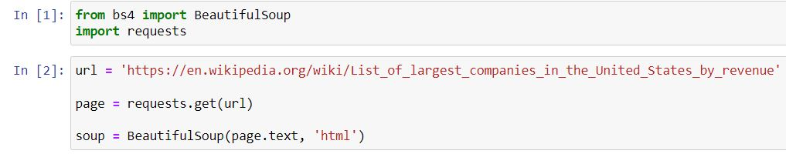
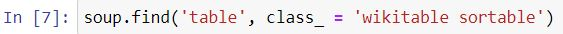
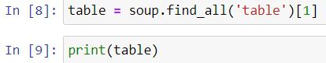
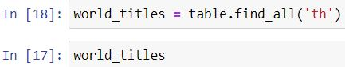
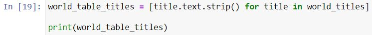
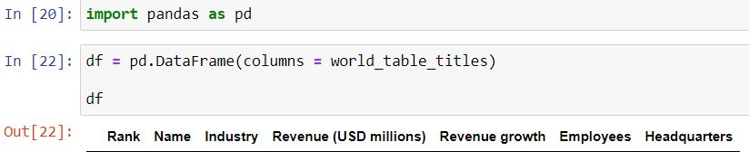
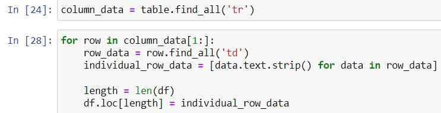
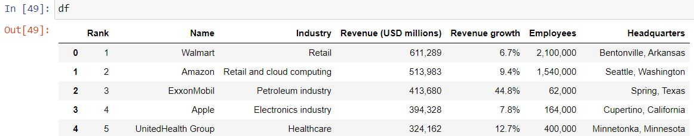
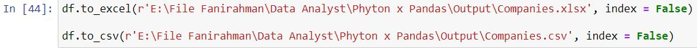

🐍🌐 Python Project Portfolio: Unveiling the Art of Web Scraping from Scratch
Exploring Python's Web Scraping Magic from Scratch
Embark on a Pythonic journey into the realm of web scraping as this project portfolio delves into the intricacies of extracting valuable data from the digital landscape. With a focus on building a web scraper from scratch, this exploration navigates the art and science behind harnessing data directly from the web. If you're eager to explore the full code and unravel the secrets of web scraping, venture into my GitHub page for a hands-on experience
In the initial steps of this web scraping endeavor, the first task was to import the essential tools—BeautifulSoup and requests. These powerful Python libraries pave the way for extracting valuable data from the web. With the tools in hand, the journey then led to marking down the target URL destined for scraping. Ensuring a seamless page request and initializing the BeautifulSoup object set the stage for the forthcoming exploration into the digital landscape.
With the tools finely tuned, the next phase of this Python web scraping project involved the strategic quest for the coveted table nestled within the web pages. The soup.find command became the navigational beacon, diligently seeking out the desired table amidst the digital expanse. This crucial step set the foundation for honing in on the specific data that would soon be transformed into actionable insights.
Having successfully pinpointed the desired table within the digital labyrinth, the focus shifted to the delicate art of data extraction. With precision, the data was deftly corralled into a structured format resembling Table 1 on the target web page. This meticulous pursuit transformed raw web data into a refined tabular form, laying the groundwork for subsequent analysis and insights. To validate this data wizardry and witness the fruits of the extraction labor, let's embark on a journey into the realms of Jupyter. Here, we'll unravel the structured clarity of the data, confirming that the digital harvest aligns with the envisioned tableau
Ensuring the seamless alignment of data and titles became the next crucial step in this Python web scraping odyssey. With meticulous precision, the index of each title was cross-examined to guarantee harmony with the anticipated structure of the target table. Once validated, the titles seamlessly adorned the dataset, but not without a touch of refinement—stripping away any undesired characters and ensuring relevance. As the final touchpoint, a reassuring print statement showcased the pristine titles.
 With titles refined and validated, the stage was set for the grand convergence—the merging of data into a structured haven, the Pandas DataFrame. In this pivotal moment, the harmonious interplay of Pandas' prowess was summoned. The data, now a well-groomed ensemble, found its place within the DataFrame, where each title assumed its rightful role as a column index.
With the symphony of titles resonating through the DataFrame, it was time to infuse life into the structure—data injection. Employing the rhythmic cadence of a for loop, each row of meticulously gathered data gracefully cascaded into its designated column. This orchestration of data input marked the culmination of the web-scraping endeavor, transforming raw HTML elements into a dynamic ensemble of rows and columns.
A quick pit stop on the journey—after funneling the web's tabular data into the DataFrame, a diligent check ensured that our digital and data landscapes matched seamlessly. Like a meticulous detective, I scrutinized every row and column, confirming that the DataFrame mirrored the online tableau. The result? A resounding "yes!" Our DataFrame stood as a pixel-perfect twin of the web's data, affirming the success of Python's web scraping magic.
With the DataFrame standing as a testament to successful data wrangling, the final act unfolded—exporting our digital masterpiece to an output file. The flexibility of Python presented a choice between CSV and Excel formats, both conduits to preserve our structured insights. In this conclusive step, the DataFrame's transformation from web chaos to data clarity found its permanent residence in a digital file. Whether CSV or Excel, the result was a resounding success, encapsulating the fruits of our web scraping odyssey in a portable, shareable format.
As the curtains draw to a close on this Python web scraping saga, we stand at the intersection of code and data, marveling at the journey from raw HTML to a structured tableau. The DataFrame, now a vessel of insights, has been adeptly ushered into the digital realm. If the allure of this web-scraped wisdom beckons you, the key to unlock it lies in a simple click—download the results Here.